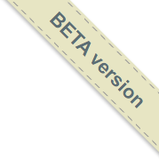

5 Bilder och ikoner
Använd bilder och ikoner endast om det finns ett tydligt användarbehov.
5.1 Logotyper
KB har två olika logotyper, dels en kombinerad logotyp med symbol och text och dels en logotyp enbart i text.
Logotyperna används bland annat i sidhuvudet och bör då länka till tjänstens startsida. Om logotypen används för navigation som i sidhuvudet så bör det framgå i alt-texten (alt="Kungliga bibliotekets webbplats"). Läs mer i avsnittet Sidhuvud.
Om logotypen används i annat syfte, kan alt-texten ange att det är en logotyp (alt="Kungliga bibliotekets logotyp" eller så kan alt-attributet vara tomt (alt=" ").
Logotyper bör, precis som andra bilder, alltid ha attributet alt. Detta underlättar för användare som använder skärmläsare. Om man vill att skärmläsare inte ska ta hänsyn till logotypen så behöver alt-attributet finnas men vara tomt (alt=" "). Title-attributet ska då inte finnas eller vara tomt. Mer information om detta finns på W3C:s webbplats.
För tjänster med unikt uttryck, ange logotypen i Cabin (?). (Det här behöver undersökas).
5.1.1 Kombinerad logotyp
Den kombinerade logotypen består av en symbol och Kungl. biblioteket skrivet i text runt om symbolen. Logotypen finns i svart och vitt. Denna ska alltid användas i sidhuvudet för KB:s tjänster.
Ladda ner logotyp
{kind=link}
{kind=link}
.logo-small
.logo-medium
.logo-large
<img src="./assets/kb_logo_black.svg" class="[modifier class]" alt="Kungliga bibliotekets logotyp" />5.1.2 Textlogotyp
Textlogotypen består av Kungl Biblioteket utskrivet i text. Logotypen finns i svart och vitt.
Ladda ner logotyp:
{kind=link}

<img src="./assets/kb_text_black.svg" class="[modifier class]" alt="Kungl. biblioteket" />5.2 Ikoner
Ikoner behöver vara enkla, tydliga och bör kompletteras med text.
Vi använder Font Awesome som är ett open source bibliotek för ikoner.
För fler exempel på hur man kan använda Font Awesome, se deras egna exempel.
.fa-leaf
.fa-flag
.fa-star
.fa-share-alt
<i class="fa [modifier class]"></i>5.3 Bilder
För att ge bilder en ram, ange klassen .image-frame

<img src="https://upload.wikimedia.org/wikipedia/commons/e/e4/Devil_codex_Gigas.jpg" alt="Uppslag ur Codex Gigas där en av sidorna visar djävulen" class="image-frame" />5.4 Favicon
Favicon är en ikon som används för att representera hela webbsidan och visas till vänster i adressfältet, samt i bokmärken.
Använd KBs logotyp?
Exempel: (bild)
5.5 Beta-flaggor
Visa tjänstens status tydligt i sidhuvudet. Dessa flaggor används för att signalera att tjänsten är i Beta.
Dessa flaggor är enbart tillfälliga och kommer ses över, nya varianter kommer!
Ladda ner:
{kind=link}
{kind=link}
{kind=link}

<div class="logo-box bg-happy-blue">
Variant 1<br/>
<img src="./assets/beta_1.png" />
</div>
<div class="logo-box bg-happy-blue">
Variant 2<br/>
<img src="./assets/beta_2.png" />
</div>
<div class="logo-box bg-happy-blue">
Variant 3<br/>
<img src="./assets/beta_3.png" />
</div>